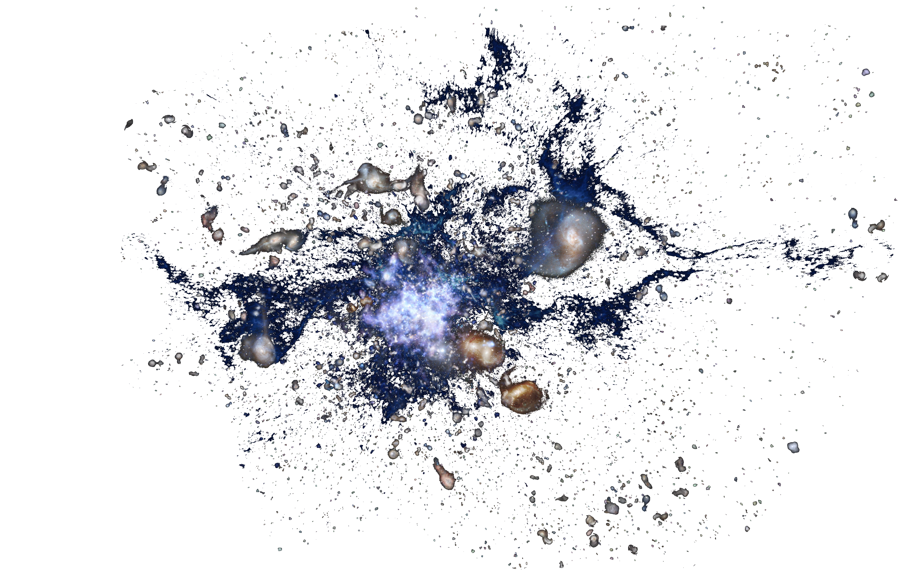

Formation
and
Evolution

The study of galaxy formation and evolution is concerned with the processes that formed a heterogeneous universe from a homogeneous beginning, the formation of the first galaxies, the way galaxies change over time, and the processes that have generated the variety of structures observed in nearby galaxies. Galaxy formation is hypothesized to occur from structure formation theories, as a result of tiny quantum fluctuations in the aftermath of the Big Bang. The simplest model in general agreement with observed phenomena is the Lambda-CDM model—that is, that clustering and merging allows galaxies to accumulate mass, determining both their shape and structure.
Formation 
Current cosmological models of the early universe are based on the Big Bang theory. About 300,000 years after this event, atoms of hydrogen and helium began to form, in an event called recombination. Nearly all the hydrogen was neutral (non-ionized) and readily absorbed light, and no stars had yet formed. As a result, this period has been called the "dark ages". It was from density fluctuations (or anisotropic irregularities) in this primordial matter that larger structures began to appear. As a result, masses of baryonic matter started to condense within cold dark matter halos. These primordial structures would eventually become the galaxies we see today.
Evolution
Within a billion years of a galaxy's formation, key structures begin to appear. Globular clusters, the central supermassive black hole, and a galactic bulge of metal-poor Population II stars form. The creation of a supermassive black hole appears to play a key role in actively regulating the growth of galaxies by limiting the total amount of additional matter added. During this early epoch, galaxies undergo a major burst of star formation.